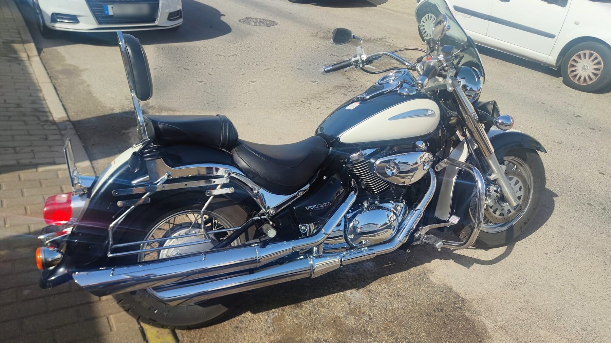

Suzuki · Intruder 800 Volusia
“Blanco y Negro”
La veterana del club. Bitono negro y blanco, guardabarros envolventes, respaldo, alforjas, mucho cromo y ese V-twin grave que se oye antes de verla llegar. Ha cruzado más puertos que cualquiera de nosotros y sigue arrancando a la primera en enero.
MotorV-twin 805 cc
EstiloCruiser bitono
PilotoHannibal